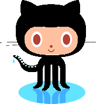

Welcome to Professor Xplorer
Facebook
Instagram
X / Twitter
LinkedIn
 GitHub
YouTube PX
YouTube PXT
Linktree
 Welcome to Professor Xplorer
Welcome to Professor Xplorer
Welcome to Professor Xplorer
Welcome to Professor Xplorer
 Facebook
Facebook Instagram
Instagram  X / Twitter
X / Twitter  LinkedIn
LinkedIn  YouTube PX
YouTube PX